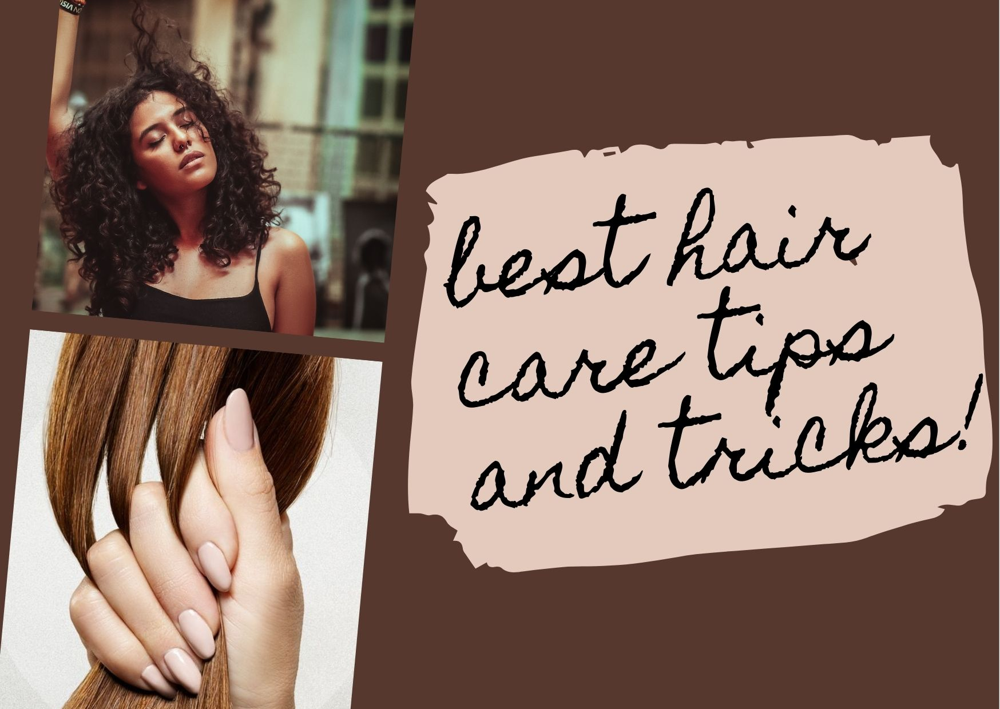
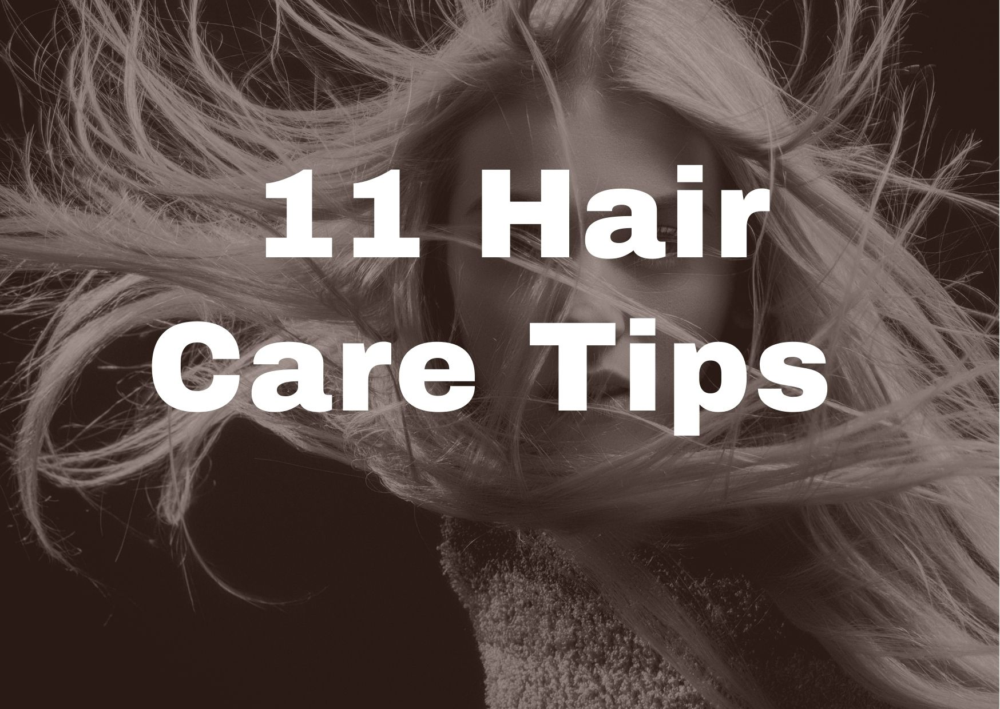

<!DOCTYPE html>
<html>
<head>
<title>About Us</title>
<link rel="stylesheet" href="style.css">
</head>
<body>
<header>

<nav>
<ul>
<li><a href="index.html">Home</a></li>
<li><a href="aboutus.html">About Us</a></li>
<li><a href="services.html">Services</a></li>
<li><a href="product.html">Product</a></li>
<li><a href="hairstyle.html">Hairstyle</a></li>
<li><a href="#hairtip.html">Hair Tips</a></li>
<li><a href="covid19.html">Covid 19 SOP</a></li>
<li><a href="gallery.html">Gallery</a></li>
<li><a href="academy.html">Academy</a></li>
<li><a href="location.html">Location</a></li>
<li><a href="contactus.html">Contact Us</a></li>
</ul>
</nav>
</header>
<main>
</style>
</head>
<body>
<html>
<head>
<style>
body {
  background-color: #fefbd8;
}

h2 {
  background-color: black;
}

pre {
  background-color: black;
}
</style>
</head>
<body>
<br>
<pre align="center"><font size="5" color="white"><h1>HAIR TIPS FROM EXPERT</h1>
     <p><br></p>
    <br>
<p>Bad hair day is a real thing! Isn’t it? Does that bouncy and voluminous mane models
   flaunt in hair care ads seem like a far fetched dream to you most of the time? We 
   agree, most of them do go a bit overboard.

But hair care experts opine that the dream of healthy hair can be turned into reality
 with proper hair care. Discover a curated list of top hair care tips below.</p>

 <p>
 <br>
 <align="center"><font size="5" color="white">
<p>1. Wash Your Hair Regularly
  Washing your hair regularly ensures that your scalp and hair is free of dirt and excess oil.
  However, the right frequency depends on your hair type and personal preferences. If you have
  extremely dry hair, limit your washing to twice a week. If you have an oily scalp, washing
  your hair on alternate days can help.
  <br>
  2. Use Chemical Free Shampoos
  You may not be able to control all of the environmental elements that cause hair damage, but
  you can control the shampoos you use. The fewer chemicals in your shampoo, the healthier your
  hair will be. Choose gentle shampoos that are appropriate for your hair type
  <br>
  3. Condition Correctly
  The chemicals in your conditioner help your hair fall straight and manageable. It shields your
  hair from environmental irritants as well as heat styling. It should, however, only be used on
  the tips of your hair and not on your scalp. Also, after using it, make sure to fully rinse it off.
  <br>
  4. Dry Your Hair Naturally
  We're aware. Blow drying your hair will make it look as good as your on-screen idol's. Excessive
  heat style, on the other hand, can harm your hair's scalp. If you must style, keep it to major
  events. After shampooing, air drying or towel drying is the finest option. Wet hair should never
  be slept in or combed. Rubbing your hair with a towel too hard might harm the cuticle. Be kind
  with yourself.
  <br>
  5. Oil Your Hair Properly
  Pre-shampoo treatments like oiling and massaging improve blood circulation on the scalp, relax your
  muscles, boost shine and nourish the hair. It also restores moisture content, enables hair growth
  and repairs split ends. You can choose from coconut oil, almond oil, olive oil, castor oil and the
  likes. Avoid using mineral oil on your hair.
  <br>
  6. Use A Wide-toothed Comb
  Wet hair is fragile and prone to breakage. Let your hair dry and then use a wide-toothed comb to brush
  your hair. This kind of a comb prevents damage to your hair.
  <br>
  8. Trim Your Hair Regularly
  To avoid split ends, trim your hair every 6-8 weeks. When the hair is damaged by heat styling, pollution,
  smoking, stress, and other factors, split ends emerge. Trimming the hair does not make it grow faster.
  Hair growth occurs at the scalp level, but regular trimming keeps hair healthy.
  <br>
  9. Drink More Water
  Internal and exterior hydration are essential for hair that is well-balanced and healthy. Even if you use
   moisturising hair care products and oils, drinking at least 3 litres of water every day is essential fo
   r excellent hair health.
  <br>
 10. Use A Hair Wrap Or Old T-shirt To Dry
 This one’s new. Your t-shirt can be used to dry your wet hair without causing damage to the hair. Traditional
  towels are rough on your hair cuticles and damage your hair over time. Save up your soft, old t-shirts
 from now on!
 <br>
 11. Use Hair Bands
 We like to show off our long hair, but we need hair bands to keep it out of the way of environmental
 aggressors. Instead of using plastic hair ties, use fabric ones. When making a ponytail or any other hair do,
 don't pull your hair too tight.
</p>
</font></pre>

</body>
</main>
<footer align="center"> Copyright &copy; AFA BARBERSHOP & SALOON </footer>
    </ul>
    </div><!-- end of container--> 
</html>
